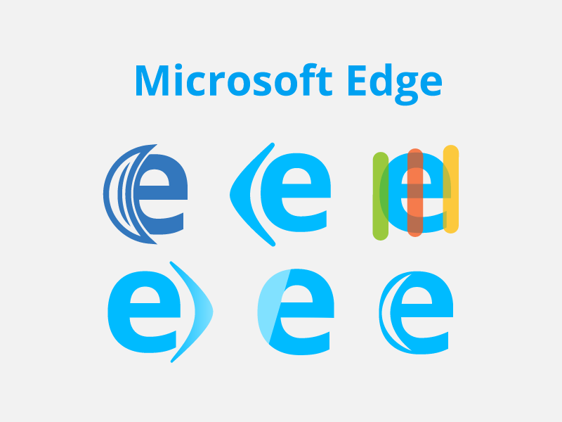

Microsoft Edge
Let's be honest, their first logo was "meh".↓
When Microsoft officially announced their new web browser and I saw the logo, I had to do something. It didn't look symmetric and frankly, it just looked like Sonic the Hedgehog. So I took it upon myself to redesign it.
I apologize for the horrible sketches you must endure.
I changed the colour to a nice light blue and added a small icon to their inital 'e'. I think the 'edge' really needed to be expressed because the original was too abstract.
In the end, I liked the bottom left one because it had an icon that represented both the name and the drawing feature it has. You can learn more about the new browser here.